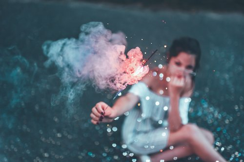
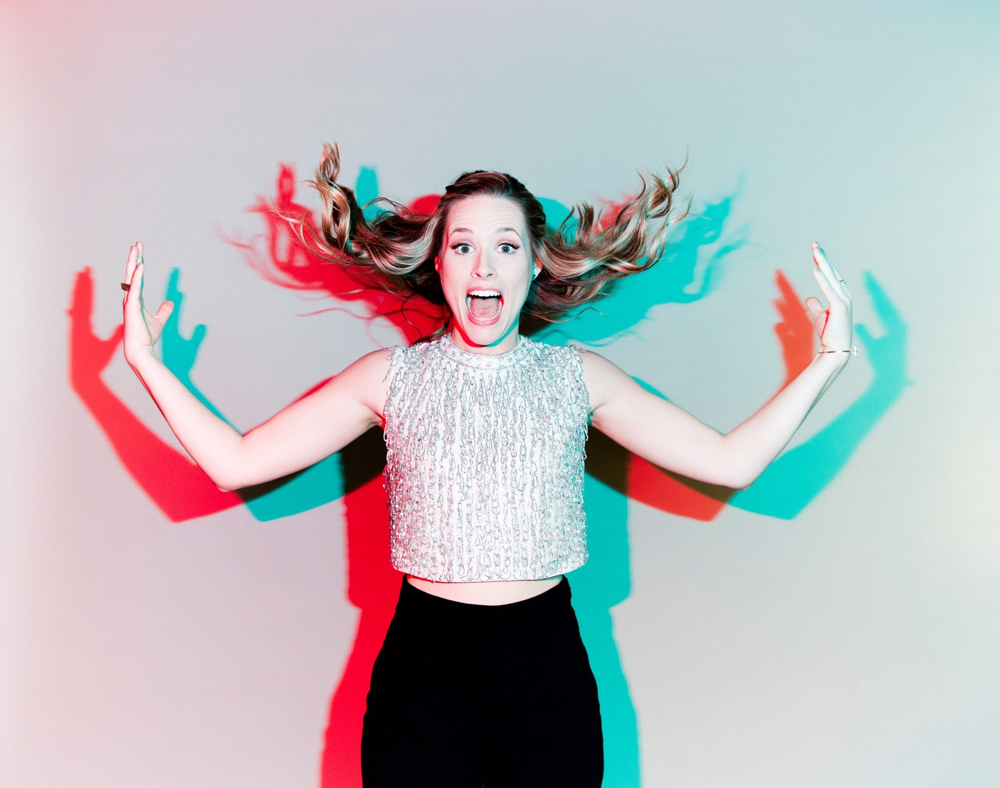
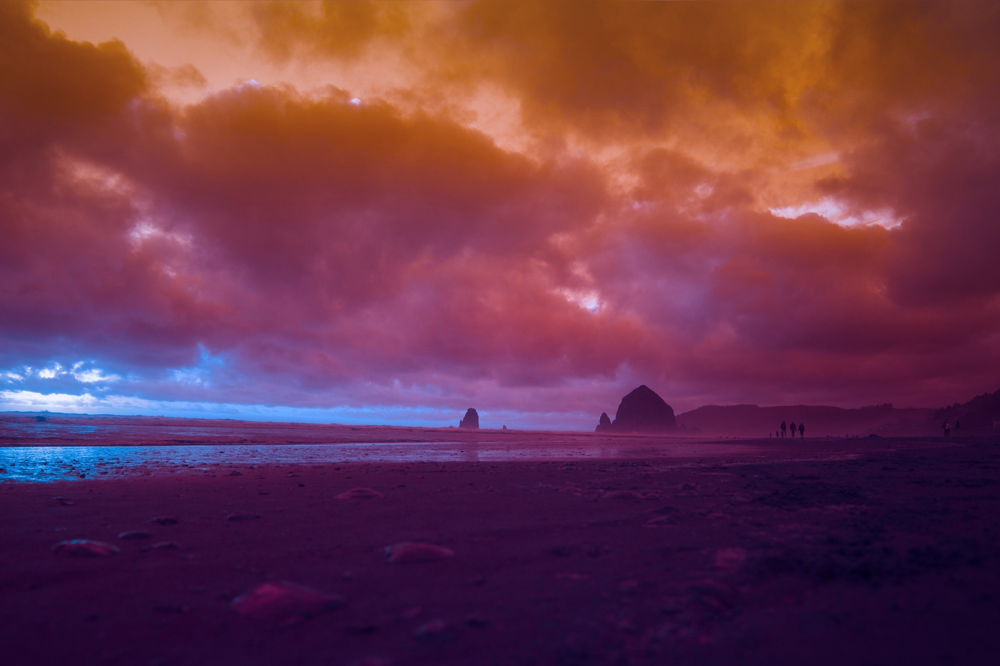
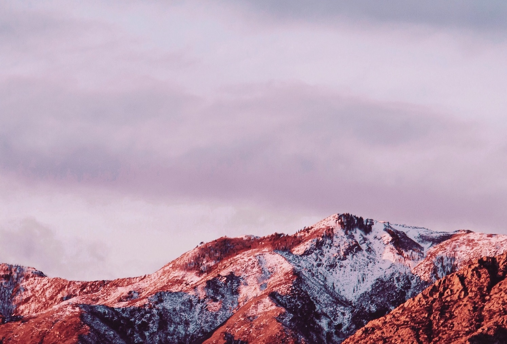

American photographer based in New York. Brandon Woelfel—a young, and enormously popular Instagram influencer—found his style early and has become an Internet sensation as a result.Now with over two million followers on Instagram and a photo book to his name, it certainly appears it was a risk worth taking. To achieve this, Brandon notes that his whimsical images—which feature distinct soft tones and pops of brightly colored hues as well as some magical post-processing—not only capture a sense of wonder, but also reflects a balance of professional passion and a keen sense of what will attract new followers online.
 Learn More about Brandon WoefelJonpaul Douglass is an LA-based commercial photographer and director who has worked with brands like Facebook, Apple, Microsoft, Disney, Skittles, Adult Swim, the NBA, and Budweiser, just to name a few. He became widely known with his 2014 photo series, Pizza in the Wild, and continues to develop his experimental and dynamic style in his personal and professional practice.
 Learn More about Jonpaul DouglassEllie Pritts is an internationally-recognized photographer and director based in Los Angeles. Originally hailing from Chicago, Ellie began her career in the arts as a classically trained cellist who studied at Merit School of Music. She went on to launch her photography business at the age of 19, dropping out of college to pursue her craft full time. Her imaginative work has captured the attention of esteemed publications such as WIRED and TIME Magazine, who in 2016 named her one of the top photographers to follow in the U.S. Long in demand as a photographer, she’s now expanded to directing and working in production design. In 2017 Ellie was brought on to help launch Apple's official Instagram account, @apple and worked as an Art Director on the #ShotOniPhone campaign. Prior to that, she founded the world’s first collaborative photography app, Hippo.
 Learn More about Ellie PrittsAdrienne Raquel is an NYC-based creative –– specializing in photography + art direction. Inspired by femininity, Summer vibes, and tropical motifs –– Adrienne's work is playful, vibrant, and nostalgic. Her eye-catching imagery and distinct use of color + composition have led to many exciting brand collaborations. Notable publications such as TIME, Refinery29, and Elle have esteemed Adrienne as an influencer + one of the top female creatives to follow.
 Learn More about Adrienne Raquel